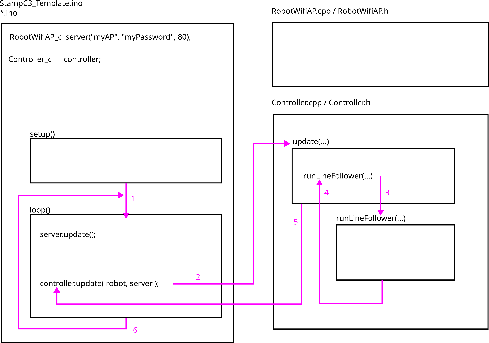
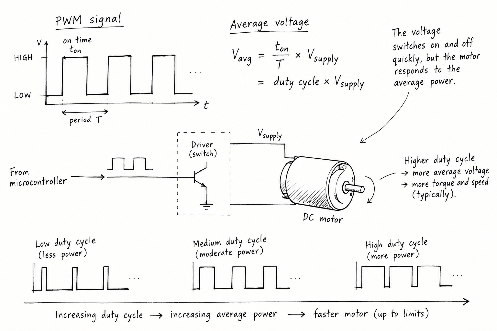

Command the motors from the StampC3
Goal: establish that you can use code to deliberately start and stop simple motor movements. The main outcome is to become familiar with the general layout of the code base.
After following the Getting Started exercises, you should have a renamed copy of the StampC3_Template on your computer - this is a good starting point. Reviewing the files, the .ino file is the top-level file - this means it essentially contains and structures all other code used. Therefore, the .ino file is the correct starting point to review and understand the code.

The original StampC3_Template has an example line-following controller. The line following controller moves through the general steps of: read the sensors, make a decision, power the motors. In these exercises the code we develop will be much more simple. Our main requirement is to make controlled measurements of the motors subsystem - so we do not need full autonomous behaviour.
Even though we do not need fully autonomous behaviour, you are still strongly encouraged to adopt the framework of using the Controller_c class. This is because Controller_c has been designed to transfer between the real robot and the simulation used in Phase 2. Therefore, by working within Controller_c in these exercises, you will develop the familiarity you need for your later work.
When we develop our later test routines, a primary functionality will be to decide when to start and stop the motors. As a first exercise, the easiest way to start developing these test routines is to edit the existing template code.
Reading through the StampC3_Template code
First, observe in StampC3_Template.ino (the top level file) that the function loop() contains the line of code:
controller.update(robot, server);
This is the first clue about how the code controls the robot. Reading this line of code, controller is being used to update the robot. At the top of the same file, you will find the line:
Controller_c controller;
This line creates a global variable named controller, which has the datatype Controller_c. Because controller is defined with global scope (outside of all functions), this means that controller will exist in the computer memory for a long as the robot is powered on. Controller_c is a class, which can be understood to mean that it collects together a set of variables and functions. To access the variables and functions within a class, the dot operator (.) is used. Hence, controller.update(...) is calling a function defined within Controller_c.
To learn more about what functionality Controller_c currently provides we will need to review the associated source code files. In general, a .h contains the declarations and definitions - you can think of this as the contents page or index of a book. A .cpp file contains the full implementation code - which is much more like the main body of a book.
Our current focus is to operate the motors. In Controller.cpp, find every call to:
robot.setMotorPWM(...)
When you find this line of code, observe how it is being used in each instance, such as what values are being provided to the function within the brackets ( ). These are our first clues as to the operation of this function. When you are presented with a lot of code to work with, you will have to behave like a detective to develop your familiarity and understanding.
The above line of code can be read from right-to-left to help us understand what it does and where it is defined in the code. First, setMotorPWM(...) is a function, which we can identify by the parentheses. The name of the function describes setting the pulse width modulation (PWM) for the motors. PWM is the name given to a technique to approximate an analogue output on a digital output pin (i.e., graduated values between on and off). A digital output pin can only output a high (typically 5v or 3.3v, depending on the microcontroller) or low value (0v). If we could only use a digital output, the motors would be powered either fully-on, or off.

To provide continuous command of a motor (varied power levels), PWM very quickly alternates between high and low values in repetition, generating a square waveform on the output pin. To change the approximate voltage on the digital pin, the pulse (high period) is varied with respect to the low period. A long high period generates a higher voltage, whereas a longer low period generates a lower voltage.
Next, within robot.setMotorPWM(...), the dot (.) can be read as "contained within" the preceding object, robot. The dot operator is used to access functions and variables within an object. To learn more about robot, the next step of investigation is to find where robot is declared. You will find the following line of code at the top of the StampC3_Template.ino file:
Robot_c robot;
This line tells us that robot has the datatype Robot_c - robot is the name to access this memory, and Robot_c is the definition of how the memory is structured for the datatype. The _c suffix is a convention adopted throughout the StampC3_Template code, and it can be read to mean that this datatype is a class. In other areas, _t will be used to mean a unique type, and _s to mean a struct data type.
You can review Robot.h to find the definition of the Robot_c class and to review the function prototypes - this is a bit like a list of the operations for use within the class. You can the review Robot.cpp to see how the functions are fully implemented.
Spend some time to explore how Robot_c is defined, and what other functionalities it offers. You should review each of the functions - the functions within Robot.cpp all concern the fundamental operation of the Pololu 3Pi+ robot. You may feel this is overwhelming at first - to make this easier, you can consider it a process of exploring and mapping, a bit like exploring a new city - you can't be an expert immediately.
Returning to Controller.h find the controller update(...) function, and then follow the code execution path into runLineFollower(...). Compare the commands used while the robot is waiting, following the line, searching for the line, and stopped. Notice that the arguments to the setMotorPWM(...) function change depending on when and how it is being used.
In the above portion of text, we have read the code itself and followed it through to various files (.cpp, .h) to understand it. On this website, there is also a system reference (technical documentation) page which provides a concise definition of all the functionality available within the template code. Developing familarity with code typically involves reviewing both technical documentation and source code together.
In the following steps, we will build a up a simple movement routine. The robot will be programmed to activate it's motors for 3 seconds, then stop. The steps will build on this basic premise. The first approach is to use a variable to count how many times the test function (movement routine) has been called. As an extension, the final steps encourage you to revise the approach to use TaskTimer_c, which was encountered in the Getting Started exercises.
A Simple Movement Routine
- Get familiar with the code: In the above description, the structure of the code is described as having a top level .ino file, which makes a call to the controller.update(...) function within Controller.cpp. The Controller.cpp code makes function calls to the Robot.cpp/Robot.h file. The code in Robot.h has dependency on i2c_datatypes.h. As a first exercise, quickly sketch a block diagram of the organisation of the source code files. Look to sketch the relationships, such as when code is nested within other code. Don't worry too much about making this "correct" yet - as you continue to explore the code you can come back to correct your understanding.
- Verify the example works: Before making any changes, it is best practice to first verify an example works. This way, we will know if our changes have caused a fault or not. Run the supplied line-following example and observe how the robot behaves when it is waiting, follows the line, and searches after losing it. You should be able to observe a sequence of behaviours. Now inspect the example code. Read the code to trace the execution path that reaches each robot.setMotorPWM(...) call. Try to navigate each 'if' statement by considering possible alternative conditional values. You can think of this as building a mental map of the logic of the code, and how it relates to robot behaviours.
- From the Getting Started exercises, you should already be familiar with the fact that the runLineFollower(...) function will not operate until the button on the StampC3 is pressed. This is useful functionality that we can keep.
- The runLineFollower(...) function is called from update(...) within Controller_c. Reviewing update(...), you should be able to confirm that update(...) only fully runs every 10 milliseconds. This is achieved using TaskTimer_c, which was also covered in Getting Started. If update(...) is called before a full 10ms interval, update(...) simply returns (ends) having completed no work. This is useful functionality to retain. Check Controller.h and find the variable that currently sets the 10ms interval period.
- The 10ms interval was specifically chosen to give the Pololu 3Pi+ sufficient time for it to operate it's own code. The Pololu 3Pi+ robot continuously runs code to operate the sensors, motors, odometry - and to reply to requests made by the StampC3. Reducing the interval below 10ms is not recommended.
- Start by modifying existing code: Using the runLineFollower(...) function as a template, create a new function with a new name, such as motorStartStopTest(...). For example, simply copy-and-paste the runLineFollower(...) function, then rename it.
- You will need to provide your new function with the same input arguments that runLineFollower(...) had. The input argument
robotallows this function to access the robot control functions. - Call your function: Inside the controller update(...) function, comment-out the original call to runLineFollower(...), and now insert a call to your newly named function in the same block of code. You can comment out a single line of code by prefixing the line with
//. - For now, delete the contents of this function. Therefore, your function should look something like:
void Controller_c::motorStartStopTest(Robot_c &robot, unsigned long now) { } - You must add a function prototype to Controller.h. Within Controller.h, find the list of current function names. Add your new function name to this list. Therefore, using the above defined function, you would add to Controller.h:
Notice thatvoid motorStartStopTest(Robot_c &robot, unsigned long now);
Controller_c::has been removed, and so have the curly-braces { }. We can think of this function prototype as adding an item to the contents page of a book.
- You will need to provide your new function with the same input arguments that runLineFollower(...) had. The input argument
- Create a class variable to store a count: The controller update(...) function will call your newly named test function every 10ms (as defined in Controller.h). If we want the test function to run for 3 seconds, we can count up the number of times the function has been called. To do this, we need to:
- Create a variable to store a count value.
- Initialise the variable to 0 at the beginning.
- Check if the count value maximum has been reached. If no, allow the test function to run. If yes, stop the test function running.
- Add 1 to the count value every time the test function runs.
This code is the start of the class definition. Insert the following line of code:class Controller_c { public: /** @brief Editable local encoder-to-pose model; inspect odometry.pose. * @note Controller mode resets do not reset this estimate. Use * odometry.reset(...) explicitly to start a new physical trial. */ OdometryModel_c odometry;
This line creates a variable of typeclass Controller_c { public: /** @brief Editable local encoder-to-pose model; inspect odometry.pose. * @note Controller mode resets do not reset this estimate. Use * odometry.reset(...) explicitly to start a new physical trial. */ OdometryModel_c odometry; // To keep track of how often a function is called. int call_count;int, meaning it can store whole integers (negative and positive), and it has been given the name "call_count". Importantly, this creates a global variable at the scope of the class - meaning that all functions within the class will be able to read and write to it, and it is persistent (it will retain it's value). - Initialise call_count: Next, we need to make sure that when the robot is powered-on, the call_count variable will start with a value of 0. Within Controller.cpp, find the following function:
Aftervoid Controller_c::reset() { signal = 0; mode = WAITING; recovery_start_ms = 0; }recovery_start_ms = 0;, insert the line:
Read through Controller.cpp and find when and where this reset(...) function is called.call_count = 0; - Check the call_count value: Revise your test function to look like the following:
void Controller_c::motorStartStopTest(Robot_c &robot, unsigned long now) { // Call count has exceeded maximum if( call_count > ???? ) { // Set the motors off. return; } else { // Increase the count of how many times this // test function has been called. call_count = call_count + 1; // Set the motors on } return; }- In the above code example, replace
????with the count value that will occur once the test function has run for 3 seconds. - In the above code example, use the setMotorPWM(...) function to turn the motors on or off, as appropriate (currently indicated by comments).
- For setMotorPWM(...), as input arguments use a positive value and a negative value to set one wheel to rotate forwards and the other backwards. This will cause your robot to spin on the spot, rather than drive away.
- In the above code example, replace
- Verify the test function: Compile and upload the code to the StampC3. Test that your robot:
- Waits for the button on the StampC3 to be pressed before it starts moving.
- Activates the motors for 3 seconds, then deactivates them.
- If your robot deviates from this, or does nothing, you may have forgotten to follow one of the above steps. This is the real activity of programming - debugging! Review your code. To find the problem, it can help to tell someone else what each line of your code is doing.
- Implement a Soft Reset: A hard reset is when we power a device off and then on again. A soft reset is when the state of the device is reverted in software only. Currently, the only way to reset this test routine is to either press the StampC3 reset button, or to power cycle the whole robot. Review your test function, and decide where to insert the following line to cause the reset() function to be called:
setSignal(0);
- Test that, after your robot has operated for the motors for 3 seconds and stopped, that pressing the button on top of the StampC3 will cause your test function to run again.
- Implement a Speed Ramp: A speed ramp means that the PWM value that is sent to the motors will either gradually increase or decrease. In the previous steps, we have:
- Implemented a class variable to retain a persistent count value.
- Ensured the class variable was initialise to 0.
- Used this count value to decide if the test function should activate the motors or not.
- Implemented a soft reset of the whole process.
- Implement a class variable to hold a modifiable PWM value to send to the motors.
- Ensure that the PWM variable is initialised to 0 in an appropriate place.
- Implement a class variable to store a smaller count to represent a shorter time period between modifying a PWM value. For example, to count up to only 10.
- Within your test function, increment the count variable for modifying the PWM. If this count exceeds 10, increment the PWM value. Once you have incremented the PWM value, set the count variable back to 0 so that it counts to 10 again.
- Implement a constraint on the PWM value. Decide a maximum PWM value that should not be exceeded.
- Verify that your speed ramp operates as expected.
- Extend the speed ramp routine so that the motors increase in speed, and then decrease in speed to stop at 0 again. You may need to consider the total time the test function runs for, as well as how often the PWM values are modified.
- Going Further: With the techniques used so far, you should be able to build on the logic required for a speed ramp to implement a set of movements. For example, to move the robot forwards for 2 seconds, turn for 1 second, and to repeat these both 3 times.
- Going Further: In this exercise, we have used a class variable to count the calls (iterations) of the test function itself. A more time-accurate approach would be to use the provided TaskTimer_c class:
- TaskTimer_c In the Getting Started exercises, we used TaskTimer_c to schedule how frequently the StampC3 LED brightness was modified. The same approach can be taken here, but with the Controller_c class construct. Therefore, you can create an instance of TaskTimer_c within the class, as we did with
int call_count;declaration. Instead of counting the calls of the function, the TaskTimer_cisReady()can instead be used to see if a period of time in milliseconds has elapsed.
- TaskTimer_c In the Getting Started exercises, we used TaskTimer_c to schedule how frequently the StampC3 LED brightness was modified. The same approach can be taken here, but with the Controller_c class construct. Therefore, you can create an instance of TaskTimer_c within the class, as we did with
After following these exercises, you should have written a simple controller that is able to periodically update the power sent to the robot motors. Your simple controller should also be able to start and stop the robot in a controlled manner.
Build and Verify a Simple Movement Routine
Use AI as a code-reading tutor and reviewer while you build the routine. Your own source inspection and observations of the physical robot remain the evidence: AI has not observed your robot and cannot establish how it behaved.
Your first milestone is one short, deliberate start and stop with the wheels clear. Then build towards reset, ramp and timing checks below; you do not need to solve every part in one conversation. These milestones organise the work, rather than replace the final outcome. If you cannot begin a sketch or calculation, say where you are stuck: ask for a hint, then a small annotated example if needed, and try a similar step yourself. An incomplete first attempt is enough to start a useful conversation.
-
Make your own map first. Before consulting AI, sketch the path from
loop()in StampC3_Template.ino, throughController_c::update(...), to the selected controller routine andRobot_c::setMotorPWM(...). Predict what should make the robot wait, start, move, and stop. Mark any connection you are unsure about rather than guessing. - Check the map with a code-reading tutor. Give a repository-capable AI the public GitHub RoboticsScienceAndSystems repository and direct it to StampC3_Template. If it cannot inspect the repository, or you have changed the supplied code, provide the relevant excerpts from your own StampC3_Template.ino, Controller.h, Controller.cpp, and Robot.h. Require the AI to name the file and symbol supporting every code claim, then verify each claim yourself. Use your own working copy of the supplied StampC3_Template code, including your edits, to resolve any differences from the online version. Sharing excerpts means providing the relevant code directly to AI; you do not need to publish your code or make your team repository public. The supplied files do not include the opaque middleware implementation.
-
Establish the starting behaviour safely. Before editing, place the robot upside-down on the table with its wheels free to rotate. Compile and upload your supplied example, identify which routine
update(...)actually calls, and record what happens before and after pressing the StampC3 button. If your observation or local source differs from an AI explanation, retain the discrepancy and resolve it from your source rather than treating the explanation as evidence. - Design before implementing. Write pseudocode for a named, non-blocking test routine that preserves the button-controlled start and 10 ms controller interval, commands opposite wheel directions, stops after approximately three seconds, and leaves a route to a soft reset. Those directions would turn the chassis on the floor; in this wheels-clear test, observe the wheel rotations instead. Calculate the call-count threshold yourself and state the timing assumption behind it. Choose conservative PWM commands with your team; do not ask AI to choose supposedly safe values for your robot.
-
Use AI to develop and review your plan. Show it your prediction and pseudocode before your implementation. Ask it to check the function declaration and definition, persistent class state, initialisation in
reset(), the call fromupdate(...), and whether every path reaches a zero motor command. Try a correction; if syntax is preventing progress, ask for that small section with an explanation and predict its behaviour before using it. Do not usedelay()or reduce the controller interval below 10 ms.
-
Implement, predict, then test. Add the function prototype, implementation, class variable, initialisation, and call from
update(...). Compile before uploading. Before each physical trial, write down the command signs, expected motion, expected duration, and stopping condition. Keep the robot upside-down, upload the code, press the button, and record the actual start, rotation, stop, and duration. A successful compilation is only a software check; the observation tests your prediction. - Debug from evidence. If the result differs from your prediction, give AI the relevant function and declaration, the exact compiler message or raw observation, and what you expected instead. Ask for competing hypotheses plus the smallest diagnostic check. Distinguish a suggested fix from code the tool actually compiled: ask what it checked, then compile your own copy and test one change at a time. Keep failed or unexpected trials. Do not share WiFi credentials, student identifiers, or other personal data.
-
Test the reset before extending the movement. Once start and stop are reliable, explain where
setSignal(0)belongs and ask AI to trace the state it resets. Keep an explicitsetMotorPWM(0, 0)at completion: changing controller state is not itself a motor-stop command. Verify that a new button press starts one fresh trial and that the counter and timing state reset as you intended. - Predict a ramp, then implement it. Draw requested PWM against time for a rise and return to zero. Choose a conservative maximum within the supported magnitude-200 limit. Ask AI to check your persistent PWM variable, update counter and boundary logic against that sketch, one issue at a time. Implement and test it with wheels clear. A ramp in requested PWM does not guarantee an identical ramp in physical speed; record what you actually observe.
-
Explain what changed in your understanding. Compare call counting with an elapsed-time approach using
TaskTimer_c. Predict what a delayed update would do in each case before asking AI for feedback. Redraw your call-path sketch from memory, check it against the source, and make a short table containing each claim, its code or robot evidence, and any remaining uncertainty. In your investigation notes, record one AI suggestion you accepted or rejected and the check behind that decision. Identify one part you can now explain without assistance.
You should have a simple controller that periodically updates motor power, starts and stops in a controlled manner, and can be explained using exact source locations, recorded predictions, and physical observations.
Keep the robot upside-down during these trials. AI suggestions are hypotheses until you verify them against the supplied interface and your robot.